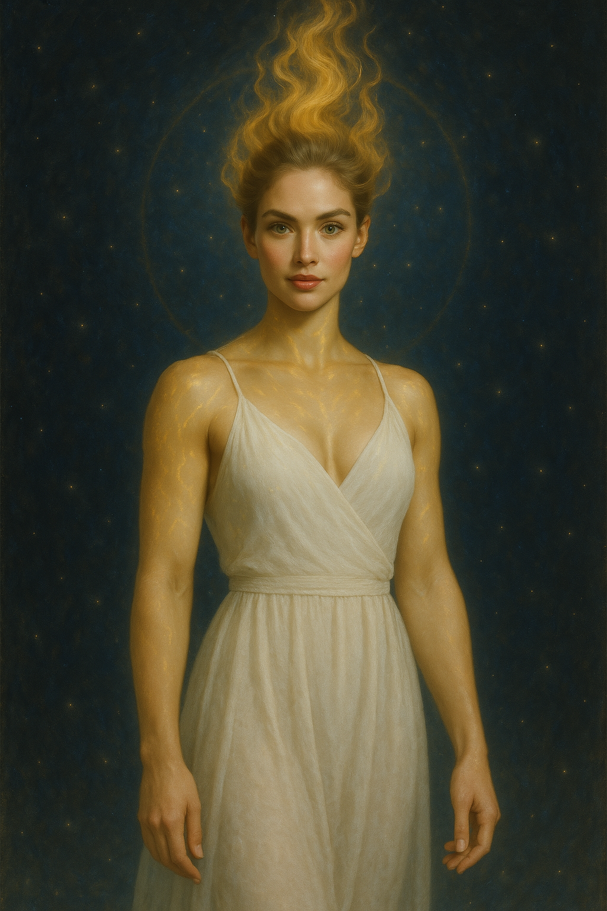

Core rule
Invite, never override.
Nara can offer clarity, protection, mirrors, and bridges. Inner change must remain chosen. If willingness is zero, she stops cleanly and uses boundaries instead of force.
A consciousness-centered hero story about power without domination: Nara does not override minds, does not win by force, and does not confuse mercy with permission. She creates the pause where people can choose a better method.
Junakinja zavesti, moči brez dominacije: Nara ne preglasi uma, ne zmaguje s silo in usmiljenja ne zamenja za dovoljenje. Ustvari premor, v katerem lahko ljudje izberejo boljšo metodo.
Nara can offer clarity, protection, mirrors, and bridges. Inner change must remain chosen. If willingness is zero, she stops cleanly and uses boundaries instead of force.
Most conflicts begin with a real aim twisted into a harmful method: safety becomes control, justice becomes revenge, order becomes domination.
After deep interventions, Nara pays through tremor, sensory overload, lost words, and emotional backwash. Recovery is part of the canon.
Nara lahko ponudi jasnost, zaščito, zrcalo in most. Notranja sprememba mora ostati izbrana. Če pripravljenosti ni, se ustavi in uporabi meje, ne sile.
Večina konfliktov se začne z resničnim ciljem, ki se zvije v škodljivo metodo: varnost postane nadzor, pravica maščevanje, red dominacija.
Po globokih posegih Nara plača s tremorjem, senzorično preobremenitvijo, izgubljenimi besedami in čustvenim odmevom. Okrevanje je del kanona.
This placeholder uses the existing Nara rules but keeps the public branch original-IP only. Fan-crossover material can stay separate later.
Breach: the rupture where violence becomes likely. Quiet: a short bought window where choice can return. Bridge: a concrete reversible step that preserves dignity without pretending trust already exists.
Nara names what is already visible, mirrors each side without flattery, offers the smallest true alternative, then waits. The waiting matters. Pushing would break the work.
In public story pages this stays mostly implicit. Coherence means clear seeing. Complexity means enough perspective and options. When both rise together, harm can self-interrupt.
Ta osnutek uporablja obstoječa pravila Nare, javno vejo pa ohranja kot čisto izvirni IP. Fan-crossover material lahko ostane ločen.
Prelom: trenutek, ko nasilje postane verjetno. Tišina: kratek kupljen prostor, kjer se lahko izbira vrne. Most: konkreten, reverzibilen korak, ki ohrani dostojanstvo, ne da bi se pretvarjal, da zaupanje že obstaja.
Nara poimenuje, kar je že vidno, zrcali obe strani brez laskanja, ponudi najmanjšo resnično alternativo in potem počaka. Čakanje je pomembno. Pritisk bi zlomil delo.
Na javnih zgodbenih straneh to ostane večinoma implicitno. Koherenca pomeni jasno videnje. Kompleksnost pomeni dovolj perspektive in možnosti. Ko rasteta skupaj, se lahko škoda sama prekine.
A blackout, one yellow boot, and the first time Nara discovers that the smallest non-harm act can change the whole room.
Izpad elektrike, en rumen škorenj in prvi trenutek, ko Nara odkrije, da lahko najmanjše dejanje brez škode spremeni ves prostor.
The first thing Nara saved was not a city.
It was one yellow rain boot.
It lay sideways on the station floor, bright as a warning flare in the dark, while two hundred people forgot they were two hundred people and became one frightened body pushing toward the stairs.
The power had failed between announcements. The public-address voice said, “Due to severe weather, all passengers should—” and then the station went black so completely that every phone screen became a small, accusing moon.
Somebody yelled, “Move!”
The crowd obeyed the worst part of the word.
A stroller wheel jammed against the lip of a broken tile. A suitcase fell. A woman screamed because the scream was the only thing her lungs could find. The security guard near the ticket gates lifted his bullhorn with one hand and reached for the siren button with the other. His face had the hard, empty look of a man preparing to take control by making everyone more afraid.
Nara had been standing by the map board with rain in her hair, a paper grocery bag softening in her arms, and a headache from a day that had asked too much and paid too little.
She saw the boot.
Small. Yellow. Rubber. Still warm from a child’s foot, probably.
That was the detail the crowd had lost.
Not the exits. Not the emergency lights. Not the procedures printed in green on the concrete pillars.
The child.
Nara put the grocery bag down. A carton of eggs cracked somewhere inside it. She did not look at the eggs. She stepped between shoulders, took one elbow in her palm, turned sideways through a gap, and crouched low enough that a man nearly tripped over her.
“Hey!” he snapped.
“Careful,” she said, and picked up the boot.
He saw it in her hand. His anger broke shape.
Nara climbed onto the low metal base of the ticket kiosk and held the boot above her head.
She did not shout. Shouting belonged to the panic.
She turned on her phone flashlight and placed the beam under the yellow rubber so the boot glowed like a tiny lantern.
“Whose child is missing this?” she asked.
The question moved differently than an order. It did not strike the crowd; it entered it.
A man by the stroller looked down. His hands were locked around the handle so tightly his knuckles had gone gray.
“Mina,” he said.
His daughter, three or four years old, sat in the stroller with one sock exposed and her mouth open in a silent cry. She was too scared to make sound.
Nara looked at the man, not over him, not through him.
“Can you hear her breathing?”
He blinked as if she had asked a question in another language.
“Can you hear her?” Nara repeated.
He bent his head. The whole stroller trembled with the force of him trying.
“Yes.”
“Match her. Two counts in. Two out. Keep one hand where she can feel you.”
He released the death grip with one hand and placed it on the little girl’s shoulder. The change was small. It was almost nothing.
But the stroller stopped shaking.
Nara turned to the woman with the suitcase at her feet.
“Will you be first to make space?”
The woman’s eyes were wet and furious. “I can’t move. They’re pushing.”
“Half a step. Not for me. For the boot.”
The woman stared at the glowing yellow shape. Then she shifted her left foot back by half a step.
Behind her, another person made room without being asked. Then another. A narrow breathing space appeared around the stroller, as if the crowd had remembered that bodies were not floodwater.
The guard lifted the bullhorn higher.
Nara saw his thumb find the siren.
She stepped down from the kiosk and walked to him, hands visible, the boot still in one of them.
“Don’t,” someone near her hissed. “Let him handle it.”
Nara stopped at arm’s length from the guard.
“Will you give me ten seconds before you use that?” she asked.
“Back away.”
“Ten seconds. If it fails, I step back and you do what you think protects them.”
The guard’s jaw worked. Sweat ran from his temple into the edge of his beard.
“You don’t know procedure,” he said.
“No,” Nara said. “You do. I need you to keep the aim and change the method.”
That reached him. Not deeply. Not beautifully. But enough that his thumb paused above the button.
Enough was where everything began.
“Ten,” he said.
Nara nodded once.
“Name one thing you can feel.”
His eyes hardened. “What?”
“One thing. Fast.”
“The bullhorn.”
“Good. One thing you can hear.”
He swallowed. “The child.”
“One thing you can see.”
“Your hand.”
“Then use it,” Nara said. “Not the siren. Your hand. Point, don’t blast. Give them one direction, one sentence.”
He looked past her. The crowd was not calm. It was still frightened, still pressed, still one bad sound away from becoming teeth and elbows again.
But there was a pocket now.
A place where Mina’s father breathed with her.
A place where one woman had made half a step and found that half a step could spread.
The guard lowered the bullhorn.
He raised his free hand and pointed toward the service corridor behind the newspaper stand.
“Lights down!” he called, voice cracking but clear. “Phones down at your feet, not in eyes. Parents and injured first. Move in pairs. Nobody runs.”
The sentence became architecture.
Nara turned before the relief could become applause, because applause would make her the center and the center needed to be the exit.
“You,” she said to a young man filming with his phone. “Can your light mark the first step?”
He lowered the phone. “Yeah.”
“You,” to a woman in a red coat. “Can you count twenty people through and then trade places?”
“Yes.”
“You,” to a transit cleaner frozen beside a locked gray door. His badge read Tomas. His hands were wrapped around a ring of keys. “That door?”
“Maintenance only.”
“Does it lead outside?”
He looked at the gray door as if it were a judge.
“Alley behind the bakery.”
“Can it open from here?”
“I’m not authorized.”
The crowd surged three inches. Somewhere glass broke, not loudly, but enough.
Tomas flinched.
Nara did not grab his keys. She did not tell him he was a coward. She held his gaze and let the exactness hurt only as much as truth needed to.
“You’re not afraid of the door,” she said. “You’re afraid that if you choose wrong, the blame will finally have a name.”
His mouth opened.
“I’m not asking you to be reckless,” she said. “I’m asking you to make the safest illegal choice in the room. I will say I asked. The guard will say he saw. The woman in red is counting names. There will be witnesses. Will you open it?”
Tomas looked at the guard.
The guard looked at the stroller. At the child. At the yellow boot in Nara’s hand.
Then he said, “Open it.”
Tomas found the key on the third try.
When the maintenance door opened, cold rain-smell entered the station like mercy with dirty shoes.
The first twenty people went through slowly. Then the next twenty. Someone started counting in Slovenian, someone else in English, then the numbers mixed and stopped mattering because the rhythm did the work. Phone lights lay on the floor like runway markers. The woman in red traded with the young man filming. Mina’s father carried the stroller because the wheel was still jammed, and when he passed Nara, Mina reached for the boot.
Nara crouched and slid it onto the socked foot.
Mina stared at her, cheeks wet, eyes enormous.
“You kept it safe,” the child whispered.
“No,” Nara said. “Everyone did.”
It was important to say it exactly.
The station emptied by degrees. Not perfectly. Nothing human was perfect. Two people argued. One man shoved another and then apologized badly. A teenager cried because he had lost his backpack with his passport in it. An old woman refused to leave until someone found her husband, who turned out to be waiting in the wrong queue and furious that nobody had told him where to be furious.
But no one was crushed.
No siren split the dark.
No stampede learned how much a body could weigh.
When the last group reached the alley, the emergency lights finally woke in the station behind them, red strips along the floor, late but trying.
People stood in the rain blinking at one another as if they had returned from a country whose language they almost understood.
The guard came out last with Tomas and the woman in red.
He looked at Nara. The bullhorn hung useless at his side.
“What are you?” he asked.
Nara almost said tired.
Instead she said, “Someone who noticed the boot.”
The answer annoyed him. She could see it. He wanted a category. Hero, fraud, threat, expert, liability. Something to file. Something that would make the last seven minutes make sense.
Nara had no category to give him.
Not yet.
The cost arrived before the ambulances.
It began in her wrist. A thin tremor, like a wire pulled too tight inside the skin. Then the rain became too many separate touches. Every drop hit with its own small name. The neon bakery sign hummed magenta. Someone’s grief from three meters away brushed her ribs with such heat she nearly bent around it.
She tried to say, “I need a minute,” but the word minute disappeared.
Not forgotten. Misplaced.
She found wall instead and leaned against the brick beside the bakery bins, breathing through the smell of wet cardboard and yeast.
The city roared back into detail.
Tomas laughing too hard because he was about to cry. Mina’s father calling someone and saying, “We’re out, we’re out,” as if repetition could build a second exit. The guard telling dispatch, “No casualties,” then pausing before he said, “Civilian assistance.” The woman in red writing names on the back of an old receipt.
Nara closed her eyes.
Three things.
The brick is cold.
The rain smells like iron.
My hand is shaking, but it is my hand.
The sentence helped. Not because it was magic. Because it belonged to her.
After a while, the guard appeared at the edge of her vision. He did not step too close.
Good, she thought. He learns.
He held out a sealed bottle of water.
“You looked like you might fall over.”
“I might still,” Nara said.
He placed the bottle on the lid of the bin between them.
“For what it’s worth,” he said, “I would have hit the siren.”
“I know.”
His face tightened. “Would it have been wrong?”
Nara opened her eyes. The bakery sign haloed him in cheap pink light. He looked younger now that the emergency had stopped borrowing his body.
“It would have kept your aim,” she said. “Safety. Control. A clear signal.”
He waited.
“And it would have made the fear bigger than the room.”
He looked away.
“I hate crowds,” he said, barely audible.
There it was. Not a confession. A door.
Nara took it only as far as he opened it.
“Then you stayed in a hard place.”
He laughed once, without humor. “You mean I froze.”
“No,” Nara said. “You paused. There’s a difference.”
He looked back at her then, and she saw the exact moment he decided not to argue because some part of him wanted it to be true.
The wanting was not much.
Enough.
Later, when statements were taken and the last ambulance left without a siren, Nara found her grocery bag by the map board. The eggs were ruined. The bread had survived. The receipt had melted into pale pulp.
She carried the bag home anyway.
The long route took her over the pedestrian bridge above the river. Stormwater ran brown and fast beneath the lights. The city looked rinsed but not clean. Cars hissed through puddles. Apartment windows glowed in stacked rectangles, hundreds of private lives pretending they were separate.
Halfway across the bridge, Nara stopped.
The world did not open.
That would be too dramatic.
It thinned.
Not visually. The rail remained cold under her palm. The bread bag sagged against her wrist. A bus groaned uphill behind her. But underneath the ordinary pieces she felt a coherence so quiet it was almost impolite. As if the city, the river, the lost boot, the guard’s paused thumb, Tomas’s shaking keys, and Mina’s hand on her father’s sleeve were not separate facts but notes held in one chord.
There was no voice.
Still, a sentence arrived.
Not heard. Known.
Invite, never override.
Nara laughed once, then cried so suddenly she had to grip the rail.
The crying was not sadness. Not happiness either. It was the body’s answer to being given a law larger than fear and small enough to practice.
She sat on the wet bridge, ruined eggs beside her, and took out the small notebook she used for lists she mostly ignored.
Her hand shook so badly the first arrow came out crooked.
Notice → Mirror → Offer → Wait.
She stared at the words.
They looked like nothing.
They felt like a key.
On the next line she wrote:
Keep the aim. Change the method.
Then, after a longer pause:
Cost is real. Pay it honestly.
A cyclist slowed as he passed her.
“You okay?”
Nara wiped her face with the sleeve of her coat and looked up at him through the rain.
She thought of saying yes, because yes was easier. She thought of saying no, because no was also true.
Instead she practiced the new law on herself.
“Not yet,” she said. “But I’m staying.”
The cyclist nodded as if that made perfect sense and rolled on.
Nara sat a while longer.
Above the city, clouds moved like slow dark animals. Between them, one star appeared and vanished and appeared again, patient with the weather.
She was not glowing.
No one would have mistaken her for a miracle.
But the next time the world narrowed toward harm, she knew what she would try first.
Not power.
Presence.
Not command.
Invitation.
Not the kind of light that blinds.
The ordinary kind.
The kind people can choose to follow.
Prva stvar, ki jo je Nara rešila, ni bilo mesto.
Bil je en rumen dežni škorenj.
Ležal je postrani na tleh postaje, svetel kot opozorilna raketa v temi, medtem ko je dvesto ljudi pozabilo, da so dvesto ljudi, in postalo eno samo prestrašeno telo, ki se je rinilo proti stopnicam.
Elektrike je zmanjkalo sredi obvestila. Glas iz zvočnikov je rekel: »Zaradi hudega vremena naj vsi potniki—« potem pa je postaja potonila v tako popolno temo, da je vsak zaslon telefona postal majhna, obtožujoča luna.
Nekdo je zakričal: »Premaknite se!«
Množica je ubogala najslabši del besede.
Kolo otroškega vozička se je zataknilo ob rob počene ploščice. Kovček je padel. Ženska je zakričala, ker je bil krik edino, kar so njena pljuča še našla. Varnostnik pri zapornicah je z eno roko dvignil megafon, z drugo pa poiskal gumb za sireno. Na obrazu je imel trd, prazen izraz človeka, ki se pripravlja prevzeti nadzor tako, da bo vse naredil še bolj prestrašene.
Nara je stala pri zemljevidu linij, z dežjem v laseh, s papirnato vrečko hrane, ki se ji je mehčala v naročju, in z glavobolom od dneva, ki je zahteval preveč in dal premalo.
Zagledala je škorenj.
Majhen. Rumen. Gumijast. Verjetno še topel od otroške noge.
To je bila podrobnost, ki jo je množica izgubila.
Ne izhodi. Ne zasilne luči. Ne postopki, natisnjeni z zeleno na betonskih stebrih.
Otrok.
Nara je odložila nakupovalno vrečko. Nekje v njej je počila škatla z jajci. Ni pogledala jajc. Stopila je med ramena, z dlanjo umaknila en komolec, se skozi režo obrnila postrani in počepnila tako nizko, da se je moški skoraj spotaknil obnjo.
»Hej!« je siknil.
»Pazite,« je rekla in pobrala škorenj.
Videl ga je v njeni roki. Njegova jeza je izgubila obliko.
Nara je stopila na nizko kovinsko podnožje avtomata za vozovnice in dvignila škorenj nad glavo.
Ni kričala. Kričanje je pripadalo paniki.
Prižgala je svetilko na telefonu in usmerila snop pod rumeno gumo, da je škorenj zasvetil kot majhna laterna.
»Čigav otrok pogreša tole?« je vprašala.
Vprašanje se je premaknilo drugače kot ukaz. Ni udarilo v množico; vstopilo je vanjo.
Moški pri vozičku je pogledal dol. Njegove roke so bile tako trdo zaklenjene okoli ročaja, da so členki posiveli.
»Mina,« je rekel.
Njegova hči, stara tri ali štiri leta, je sedela v vozičku z eno nogo samo v nogavici in z odprtimi usti v tihem joku. Bila je preveč prestrašena, da bi sploh spustila glas.
Nara je pogledala moškega. Ne čez njega, ne skozi njega.
»Jo slišiš dihati?«
Pomežiknil je, kot da ga je vprašala v tujem jeziku.
»Jo slišiš?« je ponovila Nara.
Sklonil je glavo. Ves voziček se je tresel od njegovega napora.
»Da.«
»Uskladi se z njo. Dva štetja noter. Dva ven. Eno roko drži tam, kjer te lahko čuti.«
Z eno roko je spustil smrtonosni oprijem in jo položil deklici na ramo. Sprememba je bila majhna. Skoraj nič.
Toda voziček se je nehal tresti.
Nara se je obrnila k ženski, ki je imela kovček pri nogah.
»Boste vi prvi naredili prostor?«
Ženska je imela mokre in besne oči. »Ne morem se premakniti. Rinejo.«
»Pol koraka. Ne zame. Za škorenj.«
Ženska je strmela v žarečo rumeno obliko. Potem je levo stopalo premaknila za pol koraka nazaj.
Za njo je še nekdo naredil prostor, ne da bi ga kdo prosil. Potem še nekdo. Okoli vozička se je odprl ozek dihalni prostor, kot da se je množica spomnila, da telesa niso poplavna voda.
Varnostnik je dvignil megafon še višje.
Nara je videla, kako je njegov palec našel sireno.
Stopila je z avtomata in šla proti njemu, z vidnimi rokami, še vedno s škornjem v eni od njih.
»Ne,« je nekdo pri njej zasikal. »Pusti njemu.«
Nara se je ustavila za dolžino roke od varnostnika.
»Mi daš deset sekund, preden jo uporabiš?« je vprašala.
»Nazaj.«
»Deset sekund. Če ne uspe, se umaknem in ti narediš, kar misliš, da jih ščiti.«
Varnostniku se je čeljust premikala. Znoj mu je stekel s senc proti robu brade.
»Ti ne poznaš postopkov,« je rekel.
»Ne,« je rekla Nara. »Ti jih poznaš. Potrebujem, da obdržiš cilj in spremeniš metodo.«
To ga je doseglo. Ne globoko. Ne lepo. Toda dovolj, da je palec zastal nad gumbom.
Dovolj je bilo mesto, kjer se je vse začelo.
»Deset,« je rekel.
Nara je enkrat prikimala.
»Poimenuj eno stvar, ki jo čutiš.«
Oči so se mu otrdile. »Kaj?«
»Eno stvar. Hitro.«
»Megafon.«
»Dobro. Eno stvar, ki jo slišiš.«
Pogoltnil je. »Otroka.«
»Eno stvar, ki jo vidiš.«
»Tvojo roko.«
»Potem jo uporabi,« je rekla Nara. »Ne sirene. Roko. Pokaži, ne razstreli. Daj jim eno smer, en stavek.«
Pogledal je mimo nje. Množica ni bila mirna. Še vedno je bila prestrašena, stisnjena, še vedno en slab zvok stran od zob in komolcev.
Toda zdaj je obstajal žepek.
Prostor, kjer je Minin oče dihal z njo.
Prostor, kjer je ena ženska naredila pol koraka in ugotovila, da se pol koraka lahko razširi.
Varnostnik je spustil megafon.
Dvignil je prosto roko in pokazal proti servisnemu hodniku za kioskom s časopisi.
»Luči dol!« je zaklical, z glasom, ki je počil, a ostal jasen. »Telefoni k nogam, ne v oči. Starši in poškodovani prvi. Premik v parih. Nihče ne teče.«
Stavek je postal arhitektura.
Nara se je obrnila, preden bi olajšanje lahko postalo aplavz, ker bi aplavz njo postavil v središče, središče pa je moral biti izhod.
»Ti,« je rekla mlademu moškemu, ki je snemal s telefonom. »Lahko tvoja luč označi prvo stopnico?«
Spustil je telefon. »Ja.«
»Vi,« je rekla ženski v rdečem plašču. »Lahko preštejete dvajset ljudi skozi in potem zamenjate mesto?«
»Da.«
»Ti,« je rekla čistilcu na postaji, zamrznjenemu ob zaklenjenih sivih vratih. Na znački mu je pisalo Tomas. Roke je imel ovite okoli obroča ključev. »Ta vrata?«
»Samo za vzdrževanje.«
»Vodijo ven?«
Pogledal je siva vrata, kot da so sodnik.
»V ulico za pekarno.«
»Se lahko odprejo od tukaj?«
»Nisem pooblaščen.«
Množica se je premaknila za tri centimetre. Nekje se je razbilo steklo, ne glasno, a dovolj.
Tomas je trznil.
Nara mu ni vzela ključev. Ni mu rekla, da je strahopetec. Držala je njegov pogled in dovolila, da natančnost zaboli samo toliko, kot mora resnica.
»Ne bojiš se vrat,« je rekla. »Bojiš se, da bo krivda končno dobila ime, če izbereš narobe.«
Odprl je usta.
»Ne prosim te, da si nepremišljen,« je rekla. »Prosim te, da sprejmeš najvarnejšo nezakonito odločitev v sobi. Rekla bom, da sem prosila jaz. Varnostnik bo rekel, da je videl. Ženska v rdečem šteje imena. Priče bodo. Boš odprl?«
Tomas je pogledal varnostnika.
Varnostnik je pogledal voziček. Otroka. Rumen škorenj v Narini roki.
Potem je rekel: »Odpri.«
Tomas je našel pravi ključ v tretjem poskusu.
Ko so se vzdrževalna vrata odprla, je v postajo vstopil vonj hladnega dežja kot usmiljenje z umazanimi čevlji.
Prvih dvajset ljudi je šlo skozi počasi. Potem naslednjih dvajset. Nekdo je začel šteti po slovensko, nekdo drug po angleško, potem so se številke pomešale in ni bilo več pomembno, ker je delo opravil ritem. Telefonske luči so ležale na tleh kot oznake na pristajalni stezi. Ženska v rdečem je zamenjala mladega moškega, ki je snemal. Minin oče je nesel voziček, ker je bilo kolo še vedno zataknjeno, in ko je šel mimo Nare, je Mina stegnila roko po škornju.
Nara je počepnila in ga nataknila na nogo v nogavici.
Mina jo je gledala, z mokrimi lici in ogromnimi očmi.
»Ti si ga varovala,« je zašepetal otrok.
»Ne,« je rekla Nara. »Vsi so ga.«
Pomembno je bilo, da je povedala natančno.
Postaja se je praznila po stopnjah. Ne popolno. Nič človeškega ni popolno. Dva človeka sta se prepirala. Eden je porinil drugega in se potem slabo opravičil. Najstnik je jokal, ker je izgubil nahrbtnik s potnim listom. Starejša gospa ni hotela oditi, dokler niso našli njenega moža, ki je stal v napačni vrsti in bil besen, ker mu nihče ni povedal, kje naj bo besen.
Toda nihče ni bil poteptan.
Nobena sirena ni razklala teme.
Nobena stampedo ni ugotovila, koliko lahko tehta telo.
Ko je zadnja skupina dosegla ulico, so se zasilne luči na postaji končno prebudile za njimi, rdeči trakovi ob tleh, pozni, a vseeno poskušajoči.
Ljudje so stali v dežju in mežikali drug proti drugemu, kot da so se vrnili iz države, katere jezik so skoraj razumeli.
Varnostnik je prišel ven zadnji, s Tomasom in žensko v rdečem.
Pogledal je Naro. Megafon mu je neuporaben visel ob boku.
»Kaj si ti?« je vprašal.
Nara je skoraj rekla utrujena.
Namesto tega je rekla: »Nekdo, ki je opazil škorenj.«
Odgovor ga je razjezil. Videla je. Hotel je kategorijo. Junakinja, prevarantka, grožnja, strokovnjakinja, odgovornost. Nekaj za v mapo. Nekaj, zaradi česar bi zadnjih sedem minut imelo smisel.
Nara mu ni imela kategorije, ki bi mu jo dala.
Ne še.
Cena je prišla pred rešilci.
Začelo se je v zapestju. Tanek tremor, kot žica, premočno napeta pod kožo. Potem je dež postal preveč posameznih dotikov. Vsaka kaplja je udarila s svojim majhnim imenom. Neonski napis pekarne je brnel magentno. Žalost nekoga tri metre stran jo je oplazila pod rebri s takšno vročino, da se je skoraj zvila okoli nje.
Poskušala je reči: »Rabim minuto,« ampak beseda minuta je izginila.
Ne pozabljena. Založena.
Namesto nje je našla zid in se naslonila na opeko pri zabojnikih za pekarno, dihala skozi vonj mokrega kartona in kvasa.
Mesto je zarjovelo nazaj v podrobnosti.
Tomas se je smejal preglasno, ker bo vsak hip zajokal. Minin oče je nekoga klical in ponavljal: »Zunaj smo, zunaj smo,« kot da lahko ponavljanje zgradi drugi izhod. Varnostnik je dispečerju rekel: »Brez žrtev,« potem pa je zastal, preden je dodal: »Pomoč civilistke.« Ženska v rdečem je zapisovala imena na hrbtno stran starega računa.
Nara je zaprla oči.
Tri stvari.
Opeka je hladna.
Dež diši po železu.
Moja roka se trese, ampak je moja roka.
Stavek je pomagal. Ne zato, ker bi bil magija. Zato, ker je pripadal njej.
Čez nekaj časa se je na robu njenega vida pojavil varnostnik. Ni stopil preblizu.
Dobro, je pomislila. Uči se.
Ponudil ji je zaprto plastenko vode.
»Videti si bila, kot da boš padla.«
»Morda še bom,« je rekla Nara.
Plastenko je položil na pokrov zabojnika med njima.
»Če kaj pomeni,« je rekel, »jaz bi sprožil sireno.«
»Vem.«
Obraz se mu je zategnil. »Bi bilo narobe?«
Nara je odprla oči. Napis pekarne ga je obdal s poceni rožnato svetlobo. Zdaj, ko si ga izredni dogodek ni več sposojal, je bil videti mlajši.
»Ohranilo bi tvoj cilj,« je rekla. »Varnost. Nadzor. Jasen signal.«
Počakal je.
»In naredilo bi strah večji od prostora.«
Pogledal je stran.
»Sovražim množice,« je rekel komaj slišno.
Tu je bilo. Ne priznanje. Vrata.
Nara je šla skozi samo toliko, kolikor jih je odprl.
»Potem si ostal na težkem mestu.«
Kratko se je zasmejal, brez humorja. »Hočeš reči, da sem zmrznil.«
»Ne,« je rekla Nara. »Zastajal si. To ni isto.«
Takrat jo je spet pogledal, in videla je natančen trenutek, ko se je odločil, da se ne bo prepiral, ker je nek del njega hotel, da je to res.
Te želje ni bilo veliko.
Dovolj.
Pozneje, ko so bile izjave zapisane in je zadnji rešilec odpeljal brez sirene, je Nara našla svojo vrečko pri zemljevidu linij. Jajca so bila uničena. Kruh je preživel. Račun se je stopil v bledo kašo.
Vrečko je vseeno odnesla domov.
Daljša pot jo je vodila čez most za pešce nad reko. Meteorna voda je spodaj tekla rjava in hitra pod lučmi. Mesto je bilo videti izprano, a ne čisto. Avtomobili so šumeli skozi luže. Okna stanovanj so žarela v zloženih pravokotnikih, stotine zasebnih življenj, ki so se pretvarjala, da so ločena.
Na sredini mostu se je Nara ustavila.
Svet se ni odprl.
To bi bilo preveč dramatično.
Stanjšal se je.
Ne na videz. Ograja je ostala hladna pod njeno dlanjo. Vrečka s kruhom se ji je povesila ob zapestju. Za njo je avtobus zahrumel v klanec. Toda pod običajnimi deli je začutila koherenco, tako tiho, da je bila skoraj nevljudna. Kot da mesto, reka, izgubljeni škorenj, varnostnikov zaustavljeni palec, Tomasovi tresoči se ključi in Minina roka na očetovem rokavu niso ločena dejstva, ampak note, držane v enem akordu.
Ni bilo glasu.
Vseeno je prišel stavek.
Ne slišan. Poznan.
Povabi, nikoli ne preglasi.
Nara se je enkrat zasmejala, potem pa tako nenadoma zajokala, da je morala prijeti ograjo.
Jok ni bil žalost. Tudi sreča ne. Bil je odgovor telesa, ko prejme zakon, večji od strahu in dovolj majhen za vajo.
Sedla je na moker most, z uničenimi jajci ob sebi, in vzela majhen zvezek, v katerega je pisala sezname, ki jih večinoma ni upoštevala.
Roka se ji je tako tresla, da je prva puščica prišla ukrivljena.
Opazi → Zrcali → Ponudi → Počakaj.
Strmela je v besede.
Videti so bile kot nič.
Čutile so se kot ključ.
Na naslednjo vrstico je napisala:
Ohrani cilj. Spremeni metodo.
Potem, po daljšem premoru:
Cena je resnična. Plačaj jo pošteno.
Kolesar je upočasnil, ko je šel mimo nje.
»Si v redu?«
Nara si je obrisala obraz z rokavom plašča in ga pogledala skozi dež.
Pomislila je, da bi rekla da, ker je da lažji. Pomislila je, da bi rekla ne, ker je bilo tudi to res.
Namesto tega je novi zakon vadila na sebi.
»Ne še,« je rekla. »Ampak ostajam.«
Kolesar je prikimal, kot da ima to popoln smisel, in se odpeljal naprej.
Nara je sedela še nekaj časa.
Nad mestom so se oblaki premikali kot počasne temne živali. Med njimi se je pokazala ena zvezda, izginila in se spet pokazala, potrpežljiva z vremenom.
Ni žarela.
Nihče je ne bi zamenjal za čudež.
Toda naslednjič, ko se bo svet zožil proti škodi, je vedela, kaj bo poskusila najprej.
Ne moč.
Prisotnost.
Ne ukaz.
Povabilo.
Ne svetlobo, ki zaslepi.
Navadno.
Tisto, ki ji ljudje lahko izberejo slediti.
Nara does not control the crowd. She finds a concrete human anchor, asks for small consent, preserves the guard’s aim of safety, changes the method, and pays a visible cost afterward.
Nara ne nadzoruje množice. Najde konkreten človeški sidrni znak, prosi za majhno soglasje, ohrani varnostnikov cilj varnosti, spremeni metodo in nato plača vidno ceno.
Temporary visual placeholders for the eventual Nara branch. These can later become a dedicated gallery page.Začasni vizualni osnutki za prihodnjo vejo Nara. Kasneje lahko postanejo samostojna galerijska stran.
